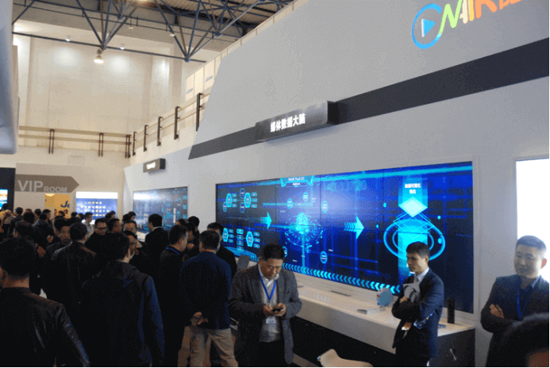
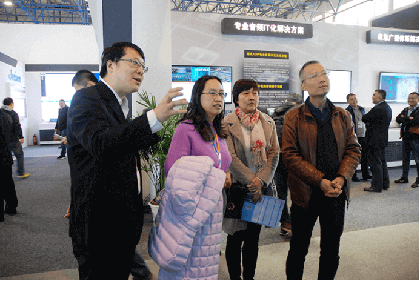
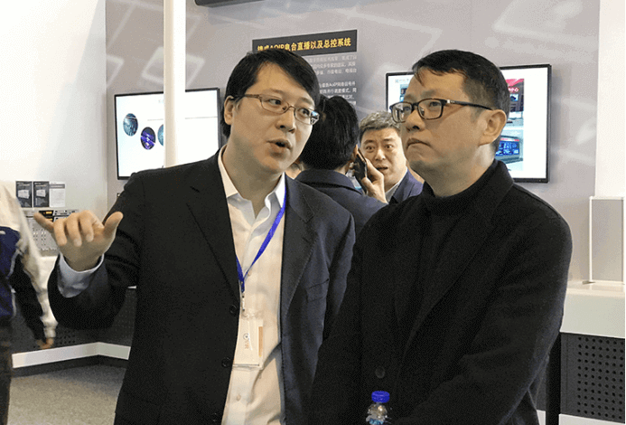
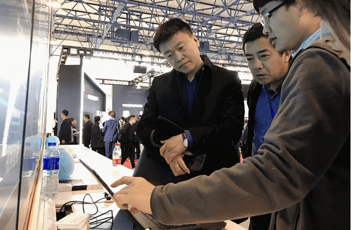
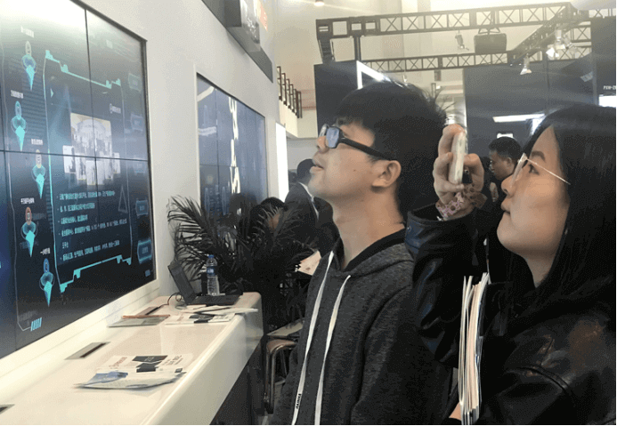
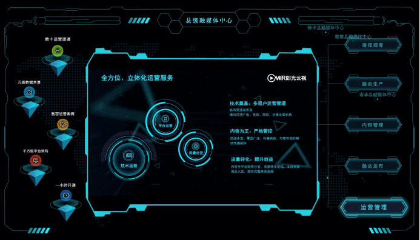

CCBN2019| 阳光云视ONAIR媒体云火热亮相，助力融合
2019年3月21—23日，第二十七届中国国际广播电视信息网络展览会（CCBN2019）在中国国际展览中心举行，阳光云视携ONAIR产品系列：媒体数据大脑、媒体云、视频云等多种解决方案亮相4号馆 4302B展位，助力实现四全媒体。
ONAIR媒体云荣幸参与2019年1月15日发布的《县级融媒体中心省级技术平台规范要求》和《县级融媒体中心建设规范》两项规范的全程制定，并依托国家级、17个省级以及大量的市县级融媒体建设经验，精心打造了“轻建设、重运营、富生态”的县级融媒体中心整体解决方案及省级平台融合媒体技术解决方案，亮相本次展会吸引了来自CCTV、广东、宁夏、江苏、内蒙古、山西、新疆、吉林、沈阳等多家省、市、县级电视台、广播、报社的媒体朋友前来交流，对ONAIR媒体云系列产品和服务进行深入沟通了解。在此，阳光云视忠心感谢众多朋友们的莅临，谢谢！





ONAIR 媒体云 省、市、县联合解决方案
底层工具能力
开启数据+智能服务，提供运营支撑
基于PaaS 3.0打造的 “大数据+人工智能”智能媒体大数据决策分析平台，能提供大量底层工具和能力。基础能力服务，可充分满足省级、县级平台业务需求；运用AI智能，提供人脸识别、智能封面、智能拆条、智能推荐、ocr识别、语意识别等智能服务，提升业务效率；同时可提供运营支撑系统，统一用户、按量计费、弹性扩张、可管可控，支持省级平台向县级提供支撑。

媒体流程再造
助力媒体行业融合发展、创新转型
整合省、市、县（区）等公共媒体资源，以内容中心为核心，两翼做支撑（县级入驻机构和媒体合作机构），通过协同指挥调度、全网舆情分析监控、聚合采编中心、统一发布矩阵、内容管控中心等多项服务，满足地方党委政府新闻宣传和政府服务需求；同时可依托平台开拓“媒体+”泛媒体服务，提供智慧党建、民生服务、培训赋能等多项业务支持，建成具备媒体属性能力，有党性的新时代媒体+服务平台，助推广电和新兴媒体深度融合发展，培育媒体产业新动能，打造媒体+政务+民生+云服务新航母。